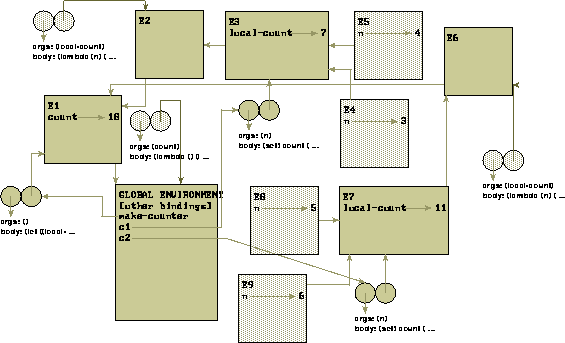

The second application included with EnvDraw, from which it derives its name, is an environment diagrammer. This can be started by typing (EnvDraw) from the STK prompt. It will bring up a top-level window with a global environment frame placed in the center. The top-level window also contains a listbox, a label, and a menu with entries labeled step, continue, stepping, colors, and exit. The label provides the same type of output as it did in the box and pointer application. The step and continue entries will step the evaluator through evaluation. Step will advance on step. Continue will continue evaluation until the REPL finishes. Stepping toggles whether or not to step at all. colors behaves exactly like in the view application. Exit leaves EnvDraw and STK. View will not work inside the metacircular evaluator, as macros aren't supported, and view is a macro. It should not be neccesary to view anything though, as all data is diagrammed. You will be placed in a metacircular evaluator where everything you evaluate is traced and drawn. When something is entered to the REPL it will be evaluated, tracing the evaluation in the listbox in the window. If stepping is enabled, it will pause at each call to apply, announcing whether a primitive (or any underlying applicable object) is being applied or whether a lambda expression created in the metacircular evaluator is being applied. Environment diagrams are drawn just as in Structure and Interpretation of Computer Programs. Environement frames, procedures, and list structures which have become garbage will be marked as such in the same manner as the view application. Button-1 moves an object and its decsendants. Button-2 moves just one object. Button-3 will delete garbage.
> (define make-counter
(let ((count 0))
(lambda ()
(let ((local-count 0))
(lambda (n)
(set! count (+ count n))
(set! local-count (+ local-count n)))))))
make-counter
> (define c1 (make-counter))
c1
> (c1 3)
3
> (c1 4)
7
> (define c2 (make-counter))
c2
> (c2 5)
5
> (c2 6)
11

The meta-evaluator provides several built-in procedures. Load will load a scheme source file into the evaluator. Display and print are the only properly defined output functions. The evaluator is fairly complete, providing most of the R4RS special forms. Letrec is not supported. Call/cc is also provided. Print-canvas will try to print the canvas to a postscript printer using a SYSV style lp command and the LPDEST environment variable (the -d flag specifies printer destination), or optionally, print a postscript file to a file named by an argument. The meta-evaluator is equipped for catching and printing error messages, however the lack of error handling support in STK created a problem in this respect. To exit the evaluator send an EOF, (exit), or hit the EXIT button on the top of the window.